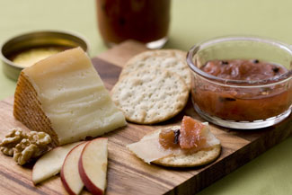

Pickled Rhubarb Recipe
Learn to make tangy rhubarb pickles with this supereasy recipe.
By Jen Catto
June 3, 2009
An interesting take on traditional pickles, tangy pickled rhubarb is a great addition to cheese platters or a condiment for charcuterie and roasted meats.
Ingredients:
2 cups apple cider vinegar
1 1/2 cups raw sugar
1 tbsp coarse sea salt
1 1/2-inch knob ginger, peeled and thinly sliced
Small handful dried chili peppers
Small handful whole cloves
Small handful whole allspice
1 pound rhubarb
Instructions:
- Boil vinegar, sugar, salt, ginger and spices until sugar and salt dissolve (approximately 5 minutes after coming to a boil). Strain out the solids, and set aside.
- Cut rhubarb into batons long enough to fill the jar. (For half-pint jars, cut stalks into 4-inch pieces.)
- Pack rhubarb into sterilized jars with a few bits of the reserved solid spices.
- Pour hot liquid over jars, screw on lids, and allow to cool.
- Refrigerate for up to one month. Note: It’s best to treat rhubarb as a refrigerator pickle, as the canning process will soften the fruit to mush.
- Adapted from www.pickle-girl.blogspot.com by Jen Catto

EMILY HELLER
By pickling rhubarb, you can highlight all three of its personalities: sweet and tart ... and yum.
|
|
|